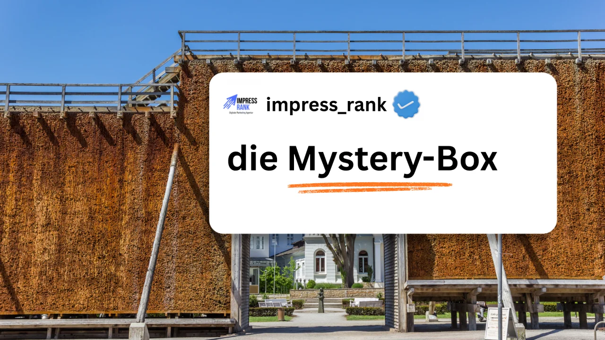

Hi,
hast du schon mal versucht, Google Ads zu schalten?
Wenn sie einmal laufen, sind sie wirklich genial.
Aber bis man an diesen Punkt kommt?
Purer Wahnsinn.
Man hat das Gefühl, Google hätte sein UX-Team irgendwann 2016 entlassen und die Entwickler hätten gesagt:
„Ach, passt schon. Wir machen das nebenbei.“
Und das Ergebnis?
Du findest nichts, für jede Kleinigkeit brauchst du gefühlt sieben Klicks und die Berichte sind teilweise so übersichtlich wie eine Steuererklärung auf Altgriechisch.
Vor allem, wenn du vorher noch nie mit Google Ads gearbeitet hast.
Ich bin 20 und zocke ganz gerne Strategie-Spiele.
Ein Kumpel von mir wollte mir irgendwann mal erklären, wie Hearts of Iron 4 funktioniert.
Also dachte ich mir: „Kann ja nicht so schwer sein.“
Falsch gedacht.
„Wie greife ich an?“
„Gar nicht. Erst musst du deine Armee aufbauen.“
Okay. Also ein paar Knöpfe drücken, durch Menüs klicken, irgendwelche Sachen produzieren.
Ein paar Minuten später denke ich, dass ich endlich Fortschritte mache.
Und plötzlich sieht es so aus, als würde ich den Zweiten Weltkrieg verlieren.
Nicht optimal.
„Da kommen Schiffe. Wie zerstöre ich die?“
„Gar nicht.“
„Wie bitte?“
„Du hast deine Flotte vor vier Runden verloren.“
„WAS?! Wann denn das?“
„Naja, hättest halt ins Marine-Menü schauen müssen.“
Er schaute mich an, als hätte ich gerade versucht, einen Nagel mit einer Banane in die Wand zu schlagen.
Und genau so fühlen sich Google Ads an, wenn man zum ersten Mal damit arbeitet.
Deshalb mein Rat:
Mach es dir einfach.
Starte mit einer Suchkampagne und ignoriere erst einmal den ganzen anderen Kram.
So bekommst du ein Gefühl für die Plattform und kannst dich in den nächsten Wochen Schritt für Schritt weiter vorarbeiten.
Oder:
Hol dir jemanden dazu, der sich damit auskennt.
Ob ich, jemand anderes oder irgendein Google-Ads-Nerd – völlig egal.
Aber jemanden an der Seite zu haben, der seit Jahren in dem Bereich unterwegs ist, spart dir unglaublich viel Zeit und Nerven.
Google Ads sind wirklich stark und ich kann sie jedem Unternehmen empfehlen.
Ich hoffe nur, dass Google irgendwann beschließt, einen echten UX-Designer einzustellen.
Bei einem Milliardenkonzern sollte das eigentlich machbar sein.
Viele Grüße aus Bad Salzuflen
John
Kostenloses Erstgespräch
Du möchtest wissen, wie du mehr Neukunden gewinnst? Im kostenlosen Erstgespräch schauen wir gemeinsam, wo du stehst.
Kostenloses Erstgespräch sichern